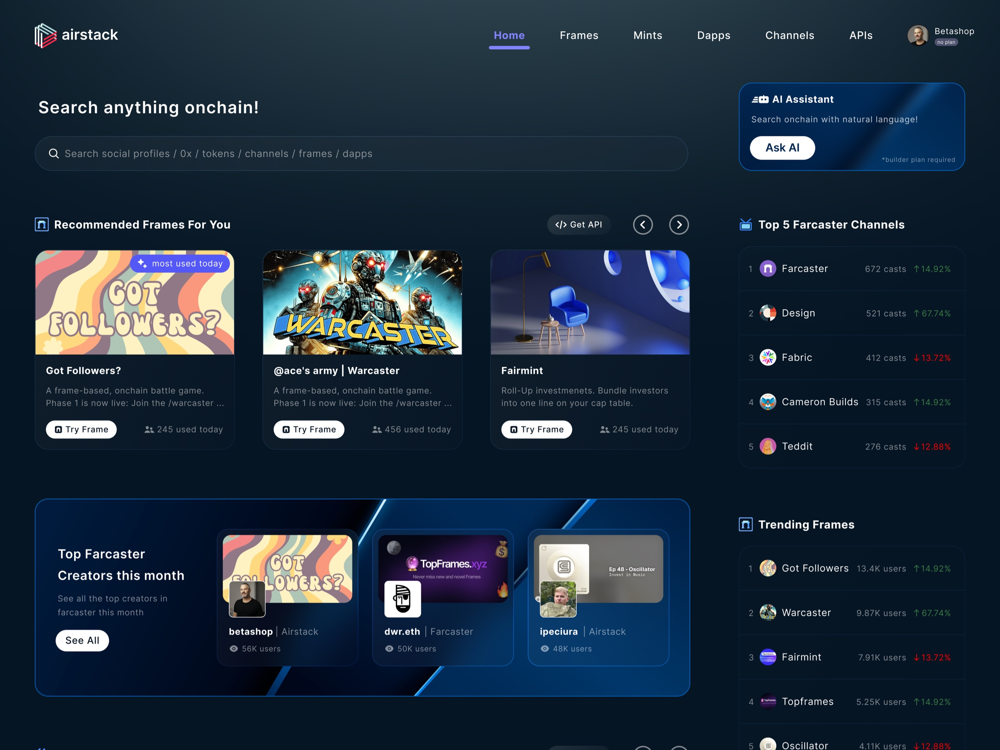
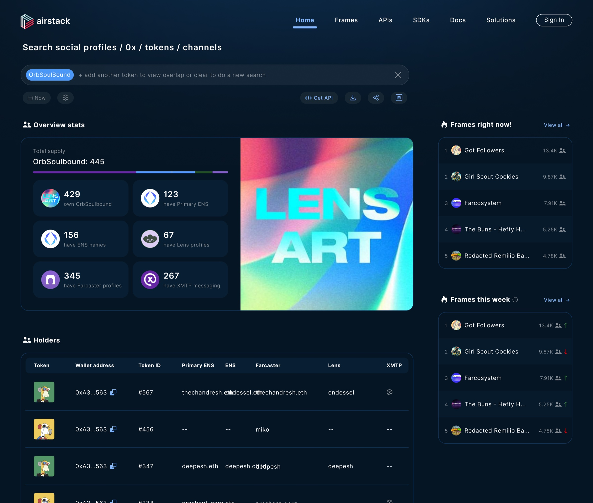
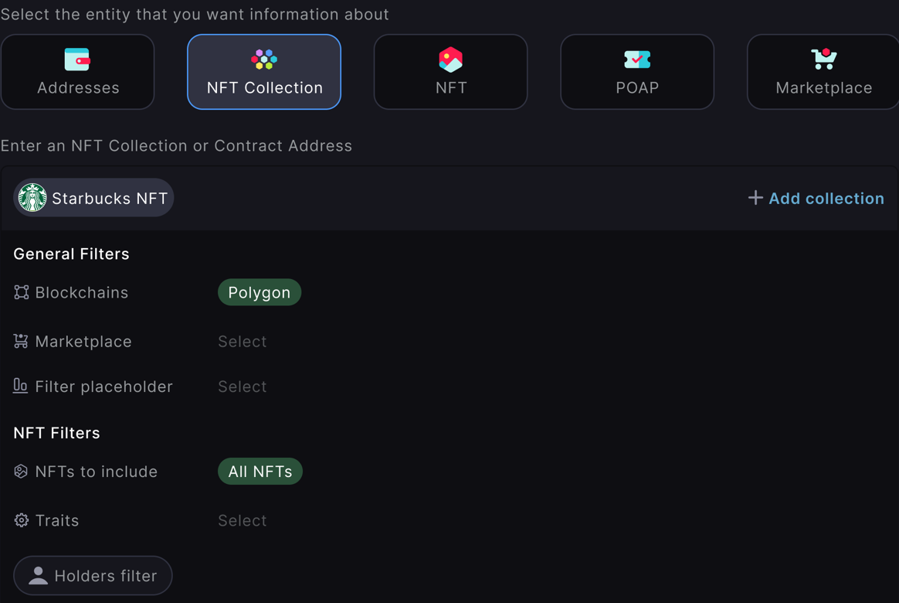
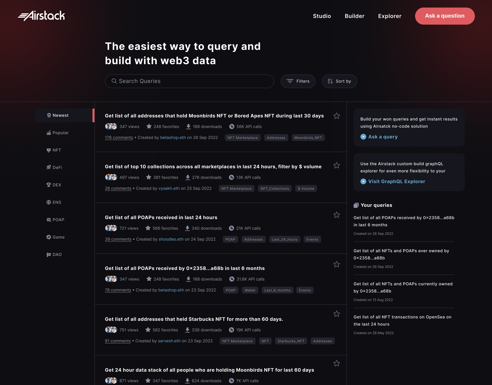

How do you make infrastructure tangible?
Airstack gave developers rich blockchain data through APIs, but its value was hard to see until they built with it. My goal: let developers experience that value before asking them to integrate.
Co-founder · Design lead
Explorer · Studio · product UX
Founder · engineering · developer community
Developer experience: docs → Explorer → Studio → community

The problem
Developers had to build before they could understand.
The docs explained the API, but many developers still built a proof of concept just to learn whether Airstack could solve their problem. Engineering time went into validating the product, not building with it.
Decision 01 · Explorer
Let developers experience the data before integrating it.
A demo
What developers found had to be real enough to ship, so sample data wasn't enough.

Real data, a real query underneath
Browse identities, tokens and activity across chains, then take the production-ready GraphQL behind any view.
Decision 02 · Studio
Plain language in, real GraphQL out, and always visible.
Knowing what you want and expressing it in GraphQL are different problems. AI wrote the query; the developer kept the code.
Close-up
- Start from the thing you care about: an address, collection, NFT, POAP or marketplace.
- Filters read like sentences, with sensible defaults already chosen.
- Nothing is hidden: the generated GraphQL stays editable, so AI never becomes a black box.
Decision 03 · Community
Turn individual queries into shared knowledge.
The same useful queries were being written again and again, one developer at a time. We extended Studio so developers could publish queries, ask questions and build on each other's work.

Outcomes
The first interaction changed from “read the docs” to “try it.” [What I'd do differently: one honest sentence.]